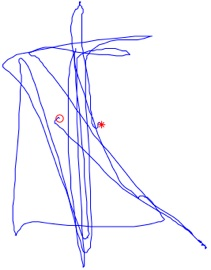

Air-fingerwriting

For controller-free and glove-free hand tracking, we use the Leap by Leap Motion. The setup is very similar to the demo video above. The tracking coordinates of Leap are aligned to the monitor with x- and y-axes lying in the horizontal plane parallel to the screen. The positive x-axis points rightward, the positive y-axis points upward, and the positive z-axis points away from the screen. The origin of the coordinates is at the center of the Leap device.
We recruited 18 participants for recording. Each subject writes 150 different words (100 common words + 50 unique words). The 100 common words are recorded by all subjects, and the 50 unique words vary for everyone. In sum, we cover a vocabulary of 1000 words with 2700 recordings. The vocabulary can be downloaded here [vocabulary.txt].
Each recording contains exactly a motion word with random motions before and after the writing. These random motions are introduced by prompting the subject to click on randomly enabled buttons on screen. We also ask the subject to press the Ctrl key with the non-writing hand when he or she is performing the writing part. Therefore, we have the “ground truth” of the handwriting part for each recording. Again, we focus only on the uppercase letter A to Z with the same stroke order specified for air-handwriting. The following figure shows what the 2D spatial trajectory of a recording looks like.
Data recording with the Leap
The writing style of air-fingerwriting is identical to what we have defined for air-handwriting. The only difference is that the writing motion is rendered now by the tip of the index finger. Because there’s no button, the push-to-write scheme cannot be applied directly. In the demo video above, we adopt the “thumb-up” gesture to initiate the writing (with the red overlay on) and “thumb-close” to finish writing and return to the cursor control. The thumb gesture is a workaround to replace a button, but it may not be the ideal solution for segmentation of air-fingerwriting.
What is air-fingerwriting?
Data format
2D projected trajectory of the recording C1_TITL

Each recording is stored in a txt file with a naming convention of [xx]_[YYYY].txt, where xx is the code name of the subject, and YYYY is the motion word.
In the recording (.txt) file, each line contains eight numbers separated by space or tab. Let’s show CI_ACCO.txt as an example.
px
py
pz
vx
vy
vz
(ignore)
ground-truth flag
0: non-writing
1: writing

Copyright © 2013. School of Electrical and Computer Engineering,
Georgia Institute of Technology. All Rights Reserved.